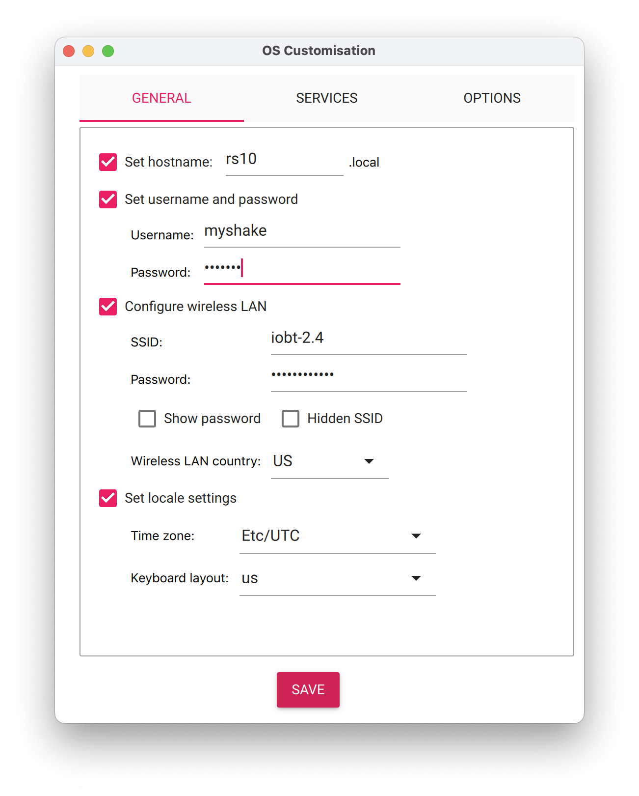
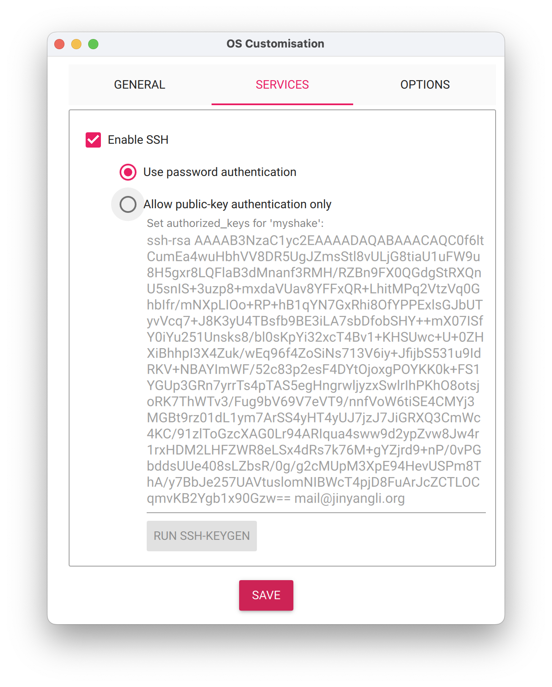
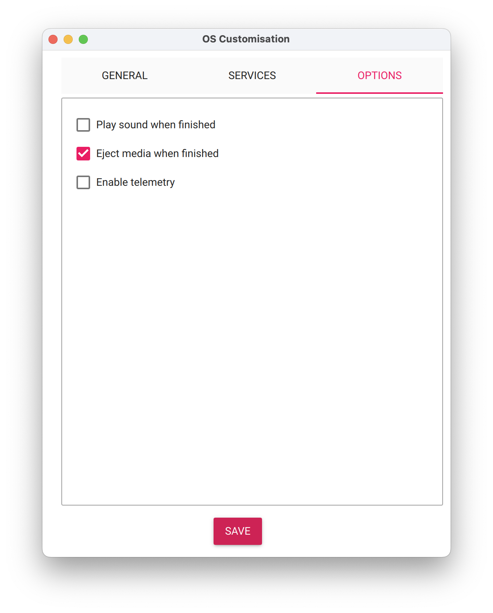

Getting Started#
Installing Dependencies#
Python Environment Management#
This project uses uv (or its predecessor rye) to manage the Python environment.
To check if rye is already installed, run:
which rye
If the command prints a path,
ryeis available and you can skip this step.If not, we recommend installing
uvfor new setups. Follow uv’s official installation guide.
For backward compatibility, you may also install rye.
Clone and install dependencies#
$ git clone https://github.com/acies-os/controller.git
$ cd controller
controller$ uv sync
# or, if using rye
controller$ rye sync
Install just#
Install just use your package manager or pre-built binary.
Install zenohd#
For x86_64 linux:
wget https://github.com/eclipse-zenoh/zenoh/releases/download/0.11.0/zenoh-0.11.0-x86_64-unknown-linux-gnu-standalone.zip
For aarch64 linux:
wget https://github.com/eclipse-zenoh/zenoh/releases/download/0.11.0/zenoh-0.11.0-aarch64-unknown-linux-gnu-standalone.zip
For aarch64 macOS:
wget https://github.com/eclipse-zenoh/zenoh/releases/download/0.11.0/zenoh-0.11.0-aarch64-apple-darwin-standalone.zip
To unzip the downloaded file, use the following command:
unzip zenoh-0.11.0-<platform>-standalone.zip
Replace <platform> with the appropriate platform identifier (e.g., x86_64-unknown-linux-gnu, aarch64-unknown-linux-gnu, or aarch64-apple-darwin).
To verify the installed version, run:
./zenohd --version
Ensure the output shows version v0.11.0.
Set Up A New Raspberry Pi/Shake#
Install Raspberry Pi Imager on the command machine.
Start the imager app, select
Device: Raspberry Pi 4
Operating System:
Ubuntu Server 22.04.4 LTS (64-bit)Storage: the SD card
  
The imager app should take care of downloading the OS, formatting the SD card and write the new image. Here are few commands for doing things in command line on macOS in case of need:
Find the SD card:
$ diskutil list # ... # some other disks # ... /dev/disk2 (external, physical): #: TYPE NAME SIZE IDENTIFIER 0: FDisk_partition_scheme *127.9 GB disk2 1: Windows_FAT_32 boot 66.1 MB disk2s1 2: Linux 127.8 GB disk2s2
Format the SD card:
diskutil eraseDisk FAT32 SDCARD MBRFormat "$TARGET_DISK"
Write image to the SD card:
diskutil unmountDisk "$TARGET_DISK" dd bs=4M if=<image_file> of="$TARGET_DISK" status=progress && sync
Open the router admin page, in the wireless client page, find the temporary IP of the new board.
$ ssh-copy-id -i ~/.ssh/id_rsa.pub myshake@<tmp_ip> $ ssh myshake@<tmp_ip> myshake@rsn$: sudo visudo # add to the end of the file myshake ALL=(ALL) NOPASSWD: ALL
On the command machine, open a terminal in this repo and run
# just boarding_party <tmp_ip> <static_ip> <vpn_ip> <node_name> all just boarding-party 10.7.0.33 10.7.0.9 10.8.0.9 rs6 all
The
alltag will run every task defined in theboarding_party.yamlplaybook. If you want to run part of the playbook, you can check the content of the file or list the tasks and tags by running:$ just list-boarding-party ansible-playbook boarding_party.yaml --list-tasks playbook: boarding_party.yaml play #1 (all): Bootstrap new shakes. TAGS: [] tasks: Create .ssh folder. TAGS: [] Set authorized key taken from file TAGS: [all, ssh] Copy myshake keys. TAGS: [all, ssh] Back up configs. TAGS: [all, backup] Set static IP with interfaces. TAGS: [deprecated] Set static IP with dhcpcd.conf. TAGS: [deprecated] Config WiFi. TAGS: [wifi] Copy /etc/hosts. TAGS: [all, config] Set hostname. TAGS: [all, hostname] Apt update. TAGS: [all, update] Apt install packages. TAGS: [all, install] Config avahi-daemon. TAGS: [all, avahi] Start and enable avahi-daemon. TAGS: [all, avahi] Create Wireguard keys. TAGS: [all, vpn] Change file mode for the private key. TAGS: [all, vpn] Get private key to generate config. TAGS: [all, vpn] Generate Wireguard client config. TAGS: [all, vpn] Start wg0.service TAGS: [all, vpn] Get public key for server command. TAGS: [all, vpn] Print command to run on Wireguard server. TAGS: [all, vpn] Set up Bash profile. TAGS: [all, bash] Set up bashrc. TAGS: [all, bash] Remove conflicting packages with docker. TAGS: [all, docker] Set up the docker apt repository TAGS: [all, docker] Install Ubuntu GPG key TAGS: [all, docker] Install docker. TAGS: [all, docker] Create docker group. TAGS: [all, docker, docker-group] Add user to docker group. TAGS: [all, docker, docker-group] Enable docker.service. TAGS: [all, docker, docker-daemon] Enable containerd.service. TAGS: [all, docker, docker-daemon] Copy myshake keys. TAGS: [all, docker, docker-registry] Back up GPSD and NTP configs. TAGS: [all, gpsd] Config gpsd. TAGS: [all, gpsd] Config ntp with gpsd. TAGS: [all, gpsd] Reboot. TAGS: [all, reboot] Debug command. TAGS: [debug]
For example, to only run SSH related tasks, you can replace
allwithssh:# Replace `all` with `ssh`` here --------------------v just boarding-party 10.7.0.33 10.7.0.9 10.8.0.9 rs6 ssh
Enable serial port. Run the command on the Pi:
$ sudo raspi-config -> 3 Interface Options -> I6 Serial Port -> Would you like a login shell to be accessible over serial? <No> -> Would you like the serial port hardware to be enabled? <Yes> -> Finish and reboot
If you want to check the output from
/dev/ttyS0, config the port withstty -F /dev/ttyS0 230400 min 0 time 5 ignbrk -brkint -imaxbel -opost -onlcr -isig -icanon -iexten -echo -echoe -echok -echoctl -echoke
Check
dmesgoutput for low voltage warning. To reduce power consumption:Disable HDMI output.
sudo apt install libraspberrypi-bin
Then append the following to
/etc/rc.localbeforeexit 0line:/opt/vc/bin/tvservice -o
If this is not enough, limit the CPU frequency by adding the following line to
/boot/config.txt[all] arm_freq=1300
See the Raspberry Pi manual for CPU frequency and info about
arm_freq.Enable swapfile.
$ sudo apt install -y dphys-swapfile $ sudo dphys-swapfile swapoff $ sudo vim /etc/dphys-swapfile # change the line to CONF_SWAPSIZE=1024 $ sudo dphys-swapfile setup $ sudo dphys-swapfile swapon
Then reboot.